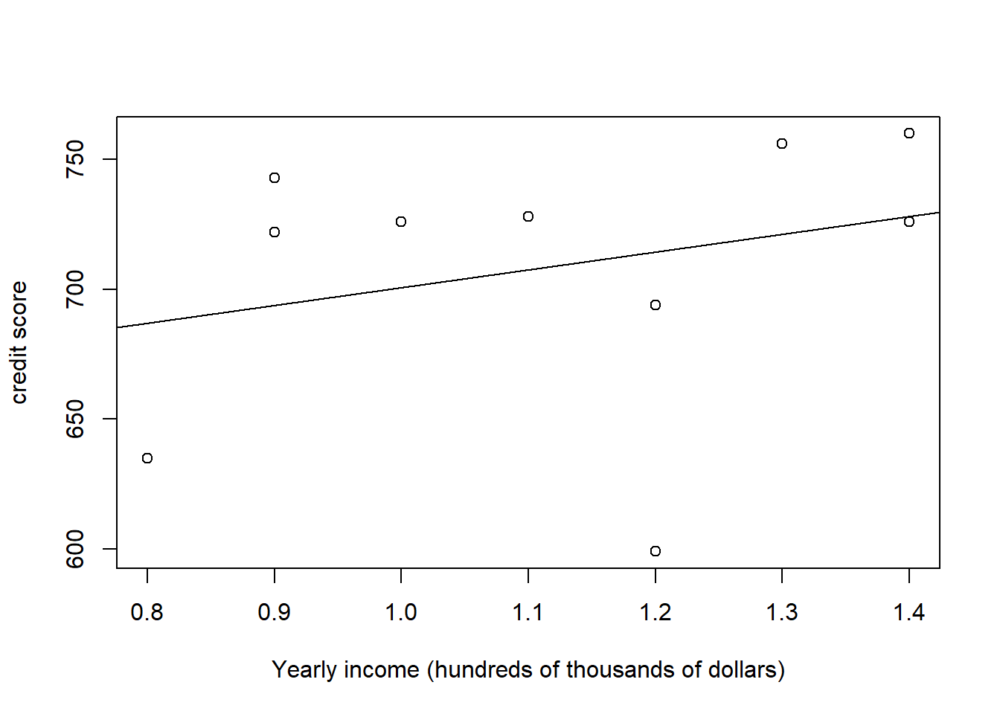

11 Correlation
In the previous chapters, we have learned statistical methods about (i) the relationship between two categorical variables (chi-square test), (ii) the relationship between one categorical variable and one continuous variable (ANOVA). In this lesson, let’s learn about the relationship between two continuous variables via the correlation coefficient.
11.1 Covariance
11.1.1 Population Covariance
The covariance of two random variables \(X\) and \(Y\) is denoted as \(\mathrm{cov}(X, Y)\) and is defined as
\[\mathrm{cov}(X, Y) = \mathbb{E}\Big[ (X - \mathbb{E}(X))(Y - \mathbb{E}(Y)) \Big] \]
that is, the covariance is the expectation of the product of
the difference between \(X\) and the mean of \(X\); and
the difference between \(Y\) and the mean of \(Y\).
Example 11.1 Suppose the joint distribution of \(X\) and \(Y\) is
| \(x\) | \(3\) | \(6\) | \(4\) | \(6\) | \(8\) |
| \(y\) | \(10\) | \(7\) | \(4\) | \(8\) | \(7\) |
| \(p(x, y)\) | \(0.15\) | \(0.3\) | \(0.05\) | \(0.4\) | ? |
Find number in the \(?\)
Calculate the covariance of \(X\) and \(Y\).
Solution:
\(1 - 0.15 - 0.3 - 0.05 - 0.4 = 0.1\)
We have
\(\mathbb{E}(X) = 3\times 0.15 + 6 \times 0.3 + 4\times 0.05 + 6\times 0.4 + 8 \times 0.1 = 5.65\)
\(\mathbb{E}(Y) = 10\times 0.15 + 7 \times 0.3 + 4\times 0.05 + 8\times 0.4 + 7 \times 0.1 = 7.7\)
\[\begin{align*} \mathrm{cov}(X, Y) & = (3-5.65)\times (10-7.7) \times 0.15 + (6-5.65) \times (7 - 7.7) \times 0.3 \\ & \qquad + ... + (8-5.65)\times (7-7.7)\times 0.1 \\ & = -0.805. \end{align*}\]
Notes: In Example 11.1, \(p(X, Y)\) is the probability that \(X = x\) and \(Y = y\) at the same time, where \(x\) and \(y\) are possible values of \(X\) and \(Y\), respectively. That is, we are not talking about individual distributions, but joint distribution here.
We can expand the formula of covariance as follows
\[\begin{align*} \mathrm{cov}(X, Y) & = \mathbb{E}\Big[ (X - \mathbb{E}(X))(Y - \mathbb{E}(Y)) \Big] \\ & = \mathbb{E} \Big[ XY - X\mathbb{E}(Y) - Y\mathbb{E}(X) + \mathbb{E}(X) \mathbb{E}(Y) \Big] \\ & = \mathbb{E}(XY) - \mathbb{E}(X)\mathbb{E}(Y) - \mathbb{E}(X)\mathbb{E}(Y) + \mathbb{E}(X)\mathbb{E}(Y) \\ & = \mathbb{E}(XY) - \mathbb{E}(X)\mathbb{E}(Y). \end{align*}\]
Therefore, we obtain another (equivalent) formula for covariance
\[\mathrm{cov}(X, Y) = \mathbb{E}(XY) - \mathbb{E}(X)\mathbb{E}(Y) \]
This formula is more convenient for calculation.
Example 11.2 Continue with Example 11.1, we can also calculate the covariance in the following way
\(\mathbb{E}(X) = 5.65\) as in Example 11.1
\(\mathbb{E}(Y) = 7.7\) as in Example 11.1
\(\mathbb{E}(XY) = 3\times 10\times 0.15 + 6\times 7 \times 0.3 + 4 \times 4 \times 0.05 + 6 \times 8 \times 0.4 + 8\times 7 \times 0.1 = 42.7\)
\(\mathrm{cov}(X,Y) = 42.7 - 5.65\times 7.7 = -0.805\)
11.1.2 Relationship with Variance
Suppose \(X\) and \(Y\) are any two quantitative random variables, and \(a\) and \(b\) are two constants, then
\[\mathrm{var}(aX + bY) = a^2\mathrm{var}(X) + 2ab\mathrm{cov}(X, Y) + b^2 \mathrm{var}(Y)\]
If \(X\) and \(Y\) are independent, then \(\mathrm{cov}(X, Y) = 0\) and we can retrieve the formula from Lesson 6:
\[\mathrm{var}(aX + bY) = a^2\mathrm{var}(X) + b^2 \mathrm{var}(Y)\]
Example 11.3 For example, the formula for the variance of, say \(-2X + 3Y\), can be derived as follows:
\[\begin{align*} \mathrm{var}(-2X + 3Y) & = (-2)^2 \times \mathrm{var}(X) +2\times(-2)\times 3\times \mathrm{cov}(X, Y) + 3^2\times \mathrm{var}(Y) \\ & = 4\mathrm{var}(X) - 12\mathrm{cov}(X, Y) + 9 \mathrm{var}(Y) \end{align*}\]
11.1.3 Interpretation
The magnitude of covariance is NOT important. It can take values from \(+\infty\) to \(-\infty\).
We can only tell the direction of the relationship of \(X\) and \(Y\) from \(\mathrm{cov}(X, Y)\):
- If \(\mathrm{cov}(X, Y) > 0\), it suggests a positive association between \(X\) and \(Y\) (\(X\) increases, \(Y\) increases)
- If \(\mathrm{cov}(X, Y) < 0\), it suggests a negative association between \(X\) and \(Y\) (\(X\) increases, \(Y\) decreases)
To see this, let us look at Figure 11.1 below.
In the top right quarter, the \(x\)-coordinates are greater than \(\mathbb{E}(X)\) and \(y\)-coordinates are greater than \(\mathbb{E}(Y)\). Therefore, \(X - \mathbb{E}(X) > 0\) and \(Y - \mathbb{E}(Y) > 0\) which leads to \((X - \mathbb{E}(X))(Y - \mathbb{E}(Y)) > 0\).
In the bottom left quarter, the \(x\)-coordinates are smaller than \(\mathbb{E}(X)\) and \(y\)-coordinates are smaller than \(\mathbb{E}(Y)\). Therefore, \(X - \mathbb{E}(X) < 0\) and \(Y - \mathbb{E}(Y) < 0\) which leads to \((X - \mathbb{E}(X))(Y - \mathbb{E}(Y)) > 0\).
So, as indicated in Figure 11.1
if \(\mathrm{cov}(X, Y) > 0\), the data \((X, Y)\) are more likely to stay in the top right or the bottom left quarter.
Similarly, if \(\mathrm{cov}(X, Y) < 0\), the data \((X, Y)\) are more likely to stay in the top left or the bottom right quarter.
Figure 11.1: Positive and negative covariances
11.1.4 Sample Covariance
We can see that \(\mathrm{cov}(X, Y)\) are defined as an expectation. However, note that expectations are only calculated on the population distribution. In practice, we usually don’t know the population distribution. Nevertheless, we can calculate the sample covariance of \(X\) and \(Y\), denoted as \(s_{XY}\) from the data using the following formula
\[s_{XY} = \frac{1}{n-1}\sum_{i=1}^n (x_i - \bar{x})(y_i - \bar{y}) = \frac{1}{n-1} \left[ \left(\sum_{i=1}x_iy_i \right) - n\bar{x}\bar{y}\right] \]
We can see that the expectation is approximated by the average of the product of
the distance between the data point \(x_i\) and the sample mean \(\bar{x}\) of \(X\)
the distance between the data point \(y_i\) and the sample mean \(\bar{y}\) of \(Y\)
According to the empirical view of probability in Chapter 3, when we have infinitely many data point, the relative frequency of a pair of possible values \((x, y)\) will approximate the probability that \((x, y)\) happens in the population. Therefore, \(s_{XY}\) will approach \(\mathrm{cov}(X, Y)\) when the sample size \(n\) goes to \(+\infty\).
Example 11.4 A new graduate is thinking ahead and wanting to better understand what goes into a good credit score. They manage to collect a random sample of annual income (in 100’s of thousands) and credit scores values for 10 people. Solve for and interpret the covariance.
| Income (\(X\)) | Credit score (\(Y\)) |
|---|---|
| \(1.3\) | \(756\) |
| \(1.1\) | \(728\) |
| \(0.8\) | \(635\) |
| \(1.2\) | \(599\) |
| \(1.4\) | \(760\) |
| \(0.9\) | \(722\) |
| \(0.9\) | \(743\) |
| \(1.4\) | \(726\) |
| \(1.2\) | \(694\) |
| \(1.0\) | \(726\) |
Solution: Using the data we can solve for \(\bar{x} = 1.12\) and \(\bar{y} = 708.9\)
\[\begin{align*} s_{XY} & = \frac{(\sum_{i=1}^{10} x_iy_i) - 10 \bar{x}\bar{y}}{10-1} \\ & = \frac{[(1.3 \times 756) + ... + (1.0\times 726)] - [10 \times 1.12 \times 708.9]}{10-1} \\ & = 3.15778 \end{align*}\]
This value suggests a positive association between annual income (\(X\)) and credit score (\(Y\)).
Example 11.5 Many factors affect the length of a professional football game, for example the number of running plays versus the number of passing plays. A study was conducted to determine the relationship between the total number of penalty yards (\(X\)) and the time required to complete a game (\(Y\), in hours). The table below provides the data. Calculate and interpret the covariance.
| Total (\(X\)) | Time to complete game (\(Y\)) |
|---|---|
| \(196\) | \(4.2\) |
| \(164\) | \(4.1\) |
| \(167\) | \(3.5\) |
| \(35\) | \(3.2\) |
| \(111\) | \(3.2\) |
| \(78\) | \(3.6\) |
| \(150\) | \(4.0\) |
| \(121\) | \(3.1\) |
| \(40\) | \(1.9\) |
Solution: Using the data we can solve for \(\bar{x} = 118\) and \(\bar{y} = 3.422\). So
\[s_{XY} = \frac{(\sum_{i=1}^{9} x_iy_i) - 9 \bar{x}\bar{y}}{9-1} = \frac{[(196 \times 4.2) + ... + (40\times 1.9)] - [9 \times 118 \times 3.422]}{9-1} = 30.6\]
This value suggests a positive association between total # of penalty yards (\(X\)) and the time to complete the game \((Y)\).
11.2 Correlation Coefficient
11.2.1 Population Correlation Coefficient
We just learned that the magnitude of the covariance is NOT important. This is because \(X\) and \(Y\) can have different scales and units. Therefore, it will be hard to compare or get a sense of the strength of the association between two random variables using covariances.
The covariance of \(X\) and \(Y\) can be standardized into the (Pearson) correlation coefficients \(\rho_{XY}\) (or in some other texts, \(\mathrm{cor}(X, Y)\)) using the following formula
\[\rho_{XY} = \frac{\mathrm{cov}(X, Y)}{\sqrt{\mathrm{var}(X)\mathrm{var}(Y)}}\]
With this standardization, the magnitude of the correlation coefficient always lies between \(-1\) or \(1\), i.e., \(-1 \le \rho_{X, Y} \le 1\), no matter the scales or units of \(X\) and \(Y\).
Example 11.6 Continue with Example 11.1, we can calculate the correlation coefficient of \(X\) and \(Y\) as follows
\(\mathbb{E}(X^2) = 3^2\times 0.15 + 6^2 \times 0.3 + 4^2\times 0.05 + 6^2\times 0.4 + 8^2 \times 0.1 = 33.75\)
\(\mathrm{var}(X) = \mathbb{E}(X^2) - (\mathbb{E}(X))^2 = 33.75-5.65^2 = 1.8275\)
\(\mathbb{E}(Y^2) = 10^2\times 0.15 + 7^2 \times 0.3 + 4^2\times 0.05 + 8^2\times 0.4 + 7^2 \times 0.1 = 61\)
\(\mathrm{var}(Y) = \mathbb{E}(Y^2) - (\mathbb{E}(Y))^2 = 61 - 7.7^2 = 1.71\)
\(\rho_{XY} = \frac{\mathrm{cov}(X, Y)}{\sqrt{\mathrm{var}(X)\mathrm{var}(Y)}} = \frac{-0.805}{\sqrt{1.8275\times 1.71}} = -0.4553\).
Exercise 11.1 In Example 11.6, calculate \(\mathrm{var}(X-Y)\).
11.2.2 Interpretation
As mentioned above, the correlation coefficient \(\rho_{XY}\) is a number between \(-1\) and \(1\). There are two important features about the correlation coefficient
magnitude: the size of the number
The closer \(|r|\) is to 1 the stronger the linear relationship. Graphically, this means the data distribute tightly about a straight line.
If \(|r| = 1\), we call it a perfectly linear relationship.
The closer \(|r|\) is to zero, the more randomly scattered and less linear the data are.
See some examples of how data will look like at different values of correlation coefficients below.
Figure 11.2: Variety of correlations
direction: the sign of the number
A positive correlation coefficient indicates that the points have a positive slope
A negative correlation coefficient indicates that the points have a negative slope
Note: The Pearson correlation coefficient is checking for a linear relationship only, i.e., whether we can fit a straight line to the data. Sometimes even though \(\rho_{XY} = 0\), other types of relationships, say quadratic, exist. This is why it is always important to plot your data. This way you can see the relationship and make proper sense of the correlation value obtained.
Other examples can be found below
Notes:
Correlation measures the strength of only the linear relationship between two quantitative variables.
Like the mean and the standard deviation, the correlation is not robust to outliers.
Correlation only tells us as \(X\) increases, \(Y\) increases, or as \(X\) increases, \(Y\) decreases, i.e., it defines a trend only.
It does NOT imply that changes in \(X\) induce changes in \(Y\), or \(X\) causes \(Y\).
Correlation only allows us to make conclusions of association.
If \(X\) and \(Y\) are independent, \(\mathrm{cov}(X, Y) = 0\) and thus \(\rho_{XY} = 0\).
The converse is NOT necessarily correct, i.e., \(\mathrm{cov}(X, Y) = 0\) does not imply \(X\) and \(Y\) are independent.
\(\mathrm{cov}(X, Y) = 0\) implies \(X\) and \(Y\) are independent only when \(X\) and \(Y\) have normal distributions.
11.2.3 Sample Correlation Coefficient
Similar to covariance, the population correlation coefficient \(\rho_{XY}\) also has a sample version \(r_{XY}\):
\[ r_{XY} = \frac{s_{XY}}{s_Xs_Y} = \frac{\sum(x_i - \bar{x})(y_i-\bar{y})}{\sqrt{\sum(x_i-\bar{x})^2\sum(y_i - \bar{y})^2}}\]
where
\(s_{XY}\) is the sample covariance between \(X\) and \(Y\)
\(s_X\) is the sample standard deviation of \(X\), i.e.,
\[s_X = \sqrt{\frac{1}{n-1}\sum_{i=1}^{n}(x_i - \bar{x})^2} = \sqrt{\frac{(\sum_{i=1}^n x_i^2)-n\bar{x}^2}{n-1}}\]
- \(s_Y\) is the sample standard deviation of \(Y\), i.e.,
\[s_Y = \sqrt{\frac{1}{n-1}\sum_{i=1}^{n}(y_i - \bar{y})^2} = \sqrt{\frac{(\sum_{i=1}^n y_i^2)-n\bar{y}^2}{n-1}}\]
Example 11.7 With data from Example 11.4, we can draw a plot as follows

To calculate the sample correlation coefficient \(r_{XY}\), we calculate the standard deviations:
\[s_X = \sqrt{\frac{(\sum_{i=1}^{10}x_i^2) - 10\bar{x}^2}{10-1}} = \sqrt{\frac{[1.3^2 + ... + 1.0^2] - [10\times 1.12^2]}{10-1}} = 0.214994\]
Similarly, we can calculate \(s_Y = 52.5726\).
Hence,
\[r_{XY} = \frac{s_{XY}}{s_Xs_Y} = \frac{3.15778}{0.214994\times 52.5726} = 0.27938\]
This value suggests that we have a fairly weak, positive, linear association between annual income (\(X\)) and credit score \((Y)\).
Example 11.8 Continue with Example 11.5, we can calculate the sample correlation coefficient as follows.
First, we need the standard deviations:
\[s_X = \sqrt{\frac{(\sum_{i=1}^{9}x_i^2) - 9\bar{x}^2}{9-1}} = \sqrt{\frac{[196^2 + ... + 40^2] - [9\times 118^2]}{9-1}} = 57.2887\]
Similarly, we can solve for \(s_Y = 0.7032\).
Hence,
\[r_{XY} = \frac{s_{XY}}{s_Xs_Y} = \frac{30.6}{57.2887\times 0.7032} = 0.7596\]
This value suggests that we have a strong, positive, linear association between total # of penalty yards (\(X\)) and the time to complete the game (\(Y\)).
The data can be plotted as below.
Notes: Notice how the interpretations of covariance and correlation coefficient differ.
11.3 Correlation Test
If \(X\) and \(Y\) follow a normal distribution (or if we have large samples of \(X\) and \(Y\)), we can test \(H_0: \rho_{XY} = 0\) using the pivotal quantity
\[T = \frac{r_{XY}}{\sqrt{1-r_{XY}^2}/\sqrt{n-2}} \overset{H_0}{\sim} t(n-2)\]
i.e., \(T\) follows a \(t\)-distribution with \(n-2\) degrees of freedom under the null hypothesis that \(H_0: \rho_{XY} = 0\). Here, again recall that \(\rho_{XY}\) is the population correlation coefficient while \(r_{XY}\) is the sample correlation coefficient.
Now, with this pivotal quantity, we can conduct the hypothesis tests for \(H_0: \rho_{XY} = 0\) and construct confidence intervals the same way as in Chapter 7 and 8.
Example 11.9 Suppose in Example 11.7, \(X\) and \(Y\) both follows a normal distribution, then if we want to test a two-sided test \(H_0: \rho_{XY} = 0\) vs. \(H_1: \rho_{XY} \ne 0\) at \(5\%\) level of significance, we compute the observed test statistic
\[t = \frac{r_{XY}}{\sqrt{1-r_{XY}^2}/\sqrt{n-2}} = \frac{0.27938}{\sqrt{1-0.27938^2}/\sqrt{10-2}} = 0.8229764\]
The critical value is \(c=t_{1-\alpha/2, n-2} = t_{0.975, 8} = 2.306\). Since \(|t| < c\), we do not reject the null hypothesis that \(\rho_{XY} = 0\) at 5% level of significance and conclude that there is not sufficient evidence in the data to support that \(\rho_{XY}\) is different from 0.
Exercise 11.2 Suppose the data in Example 11.8 are normally distributed, onduct a two-sided test with \(H_0: \rho_{XY} = 0\) at \(10\%\) significance level.
Notes: When \(X\) and \(Y\) are normally distributed, testing the null hypothesis \(H_0: \rho_{XY} = 0\) is equivalent to testing \(X\) and \(Y\) are independent.
11.4 Summary
It is very important to differentiate between the population parameter (which can be calculated/determined from the population probabilistic distribution) and the sample statistics (which is calculated from the data we collect). I summarize the differences between the population parameter and sample statistics here.
| Quantity | Population | Sample |
|---|---|---|
| Mean | \(\mathbb{E}(X)\) | \(\bar{x} = \frac{1}{n}\sum_{i=1}^n x_i\) |
| Variance | \(\mathrm{var}(X) = \mathbb{E}(X^2) - \left[\mathbb{E}(X)\right]^2\) | \(s_X^2 = \frac{1}{n-1}\left[(\sum_{i=1}^n x_i^2) - n \bar{x}^2\right]\) |
| Covariance | \(\mathrm{cov}(X, Y) = \mathbb{E}(XY) - \mathbb{E}(X)\mathbb{E}(Y)\) | \(s_{XY} = \frac{1}{n-1}\left[(\sum_{i=1}^n x_iy_i) - n\bar{x}\bar{y}\right]\) |
| Correlation coefficient | \(\rho_{XY} = \frac{\mathrm{cov}(X, Y)}{\sqrt{\mathrm{var}(X)\mathrm{var}(Y)}}\) | \(r_{XY} = \frac{s_{XY}}{s_Xs_Y}\) |